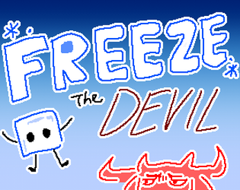
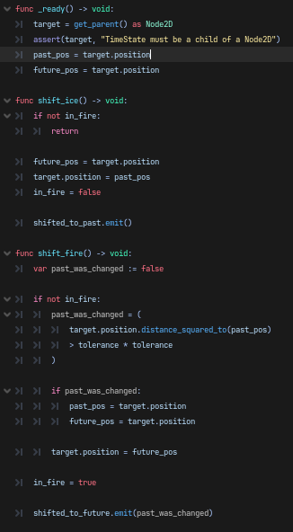
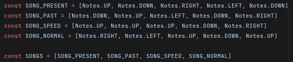
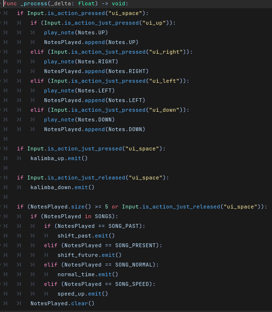
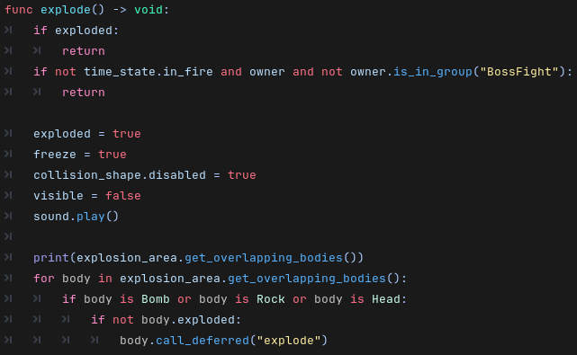
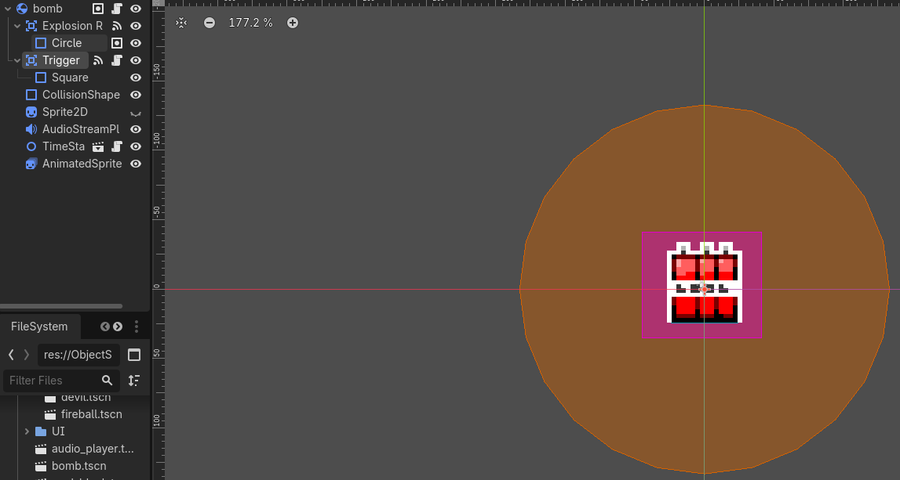

Godot · Game jam
Freeze the Devil.
Travel through time. Set the chain reaction. Refreeze hell.

Godot · GDScript · Timeline state management · Signal-driven gameplay · Bomb chain reactions · Boss mechanics
Texas Game Jam 2026 · UT Austin · September 25–27, 2026
Godot · Team of three · Jam theme: Chain Reaction
The game
A puzzle platformer built over a weekend for Texas Game Jam 2026. You play as a little ice cube descending into hell to refreeze the Devil before he escapes his icy prison and makes hell hot again.
A magic kalimba lets you travel between a frozen past and a fiery present. Arrange ice blocks and dynamite in the past, then shift to the present: ice blocks become fire points that ignite bombs. Set up a chain reaction to clear the level and descend deeper into hell.
My contributions
- Player movement: Designed and implemented a responsive platforming controller for navigating the levels.
- Time travel and world state: Implemented a past/present system where changes in the past directly alter the present, while actions in the present leave the past unchanged.
- Bomb chain reactions: Built bombs that detonate on contact with flames, detect nearby bombs, and trigger further explosions.
- Kalimba input and coordination: Built an instrument that recognizes specific input patterns as songs and coordinates time shifts across the player, level objects, music, and background.
- Water as a traversal mechanic: Adapted an existing visual-water tool so water lifts the player in the past, creating a route that disappears in the hot present.
- Scoring and levels: Implemented a points manager that persists across level transitions, along with tile mapping.
- Boss encounter: Implemented a full boss fight with multiple phases, projectiles, and parries.
Time travel, music, and chain reactions
The gameplay demonstration shows how playing a kalimba melody changes the timeline and how bomb placement determines whether an explosion chain succeeds. An initial arrangement falls short; a complete chain then demonstrates the solution.
Code showcase: timelines, kalimba input, and bomb chains
The central technical challenge
The two timelines need to preserve different world states while maintaining a one-way relationship: changing the past changes the present, but changing the present cannot rewrite the past. That rule connects object placement, fire, bomb explosions, and traversal into a single puzzle system.
The kalimba serves as the player's interface to this system, coordinating the gameplay and presentation changes when a song triggers a time shift.



Bomb behavior and scene structure
The explosion method and bomb scene show how detection areas, object state, and deferred calls work together to produce a chain reaction without repeatedly triggering the same bomb.


Boss demonstration and planned improvements
Boss encounter — current jam build
The boss demonstration shows a quick finish: one parry and two dynamite explosions defeat the boss through both phases. This also exposes a balancing issue in the jam build: damage can bypass the intended second-phase encounter.
What I would improve next
The jam build demonstrates the core systems, but playtesting exposed several areas I want to refine:
- Block movement and puzzle recovery: Blocks can stick to the ground and become unpushable from certain directions. I would investigate collision clearance and ground friction, test a small floor buffer, and add a pull interaction so players have more ways to recover a block's position.
- Audio lifecycle: Some voice lines replay when a level restarts after death. I would centralize shared audio in a persistent manager and track which voice lines have already played, separating replayable sound effects from one-time dialogue.
- Boss readability and progression: The second-phase attack needs a visible cue. I would add a clear visual telegraph, revise damage and phase-transition handling so two dynamite explosions cannot bypass the second phase, and refine parry timing and feedback.
Team and asset credits
Team and asset credits
Created with Kemblebee and Tokani as Team Crowbar. My contributions above focus on gameplay systems; full team and external-asset credits are available on the jam submission.
The water mechanic builds on a water-class base by Jesse Madyson (Mostly Mad Productions), which I adapted for platforming and time travel.